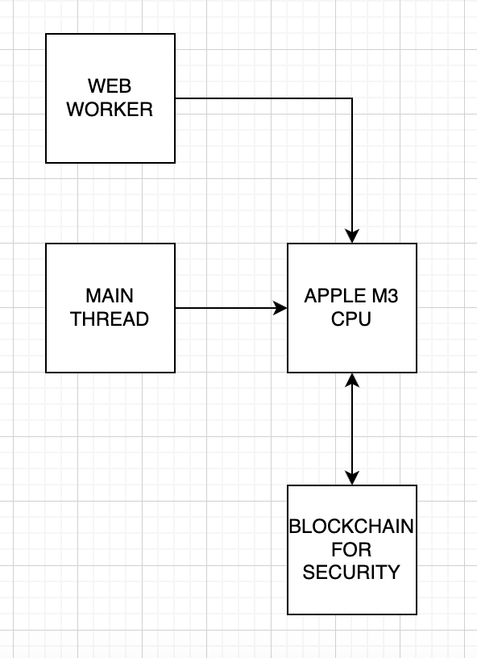

Motivational audio (written by Livesey)
Get the creative juices flowing.
Motivational video (written by Doefus)
Get the creative juices flowing.
Show video
Attendees
- John Doe – Team lead
- Sebastien Doefus – Software engineering intern
- Jane Doe – Software engineer
- Jim Doe – Software engineer
- Jim Livesey – Software engineering intern
Discussion items
- Pros and cons of
SharedArrayBuffer? - Browser differences in handling of
postMessage? - Do we need a worker at all?
- How do erroneous conditions like out-of-memory affect the main thread?
Unfinished items (4/9/2024)
- Quantifying performance needs: end-to-end latency of 100 ms ideal, but what about throughput?
- How to cancel long-running tasks?
Today's discussion
- John: Client wants 5 seconds end-to-end to transform their 50 megabyte dataset.
- Jane: Infeasible. Current algorithm scales linearithimically and so we'd expect at least a few minutes.
- Jim: How long did we know about this requirement?
- John: Since yesterday. We thought the maximum dataset would be 5 megabytes or so.
- Jane: WebAssembly SIMD might be able to help with the histogramming and sorting stage.
- John: We can't rely on it. It's not supported in all browsers.
- Jim: I think it's got support from all the major ones now. And I think it's not SIMD that will help us, but better cache locality and a lower memory footprint. JavaScript Maps are traversed in insertion order and so are slow as molasses compared to a proper unordered map.
- Jane: Could I get a refresher on why we're using web workers for this instead of server-side processing?
- Sebastien Doefus: I'm pretty sure web workers are faster than anything we could do on the server.
- Jim Livesey: Yeah. I have an Apple M3 and it has a higher Geekbench score than any server I've benchmarked.
- John: We're using web workers because the client wants to keep their data on their own servers. They don't want to send it to us.
- Sebastien Doefus: Are you an idiot? We could just use the blockchain to keep their data secure. The blockchain is the most secure way to store data. I love the blockchain. I love it so much. I love it more than my wife. I love it more than my kids. I love it more than my dog. I love it more than my cat. I love it more than my goldfish. I love it more than my hamster. I love it more than my gerbil. I love it more than my parakeet. I love it more than my canary.
- John: We're not using the blockchain. We're not even using a database. We're just processing the data in the browser and sending it back.
- Sebastien Doefus: Let me draw a diagram of what I mean.
- John: No, we don't have time for that. Do you not understand what the blockchain is?
- Jim Livesey: Your mom is a blockchain.
- Jane: What the hell does this even mean?
- Jim: Who hired these imbeciles?
- John: Mea culpa.
Diagrams

Doefus's proposed architecture. Editor's note: Sebastien threw his computer on the floor after John tried to calm him down.